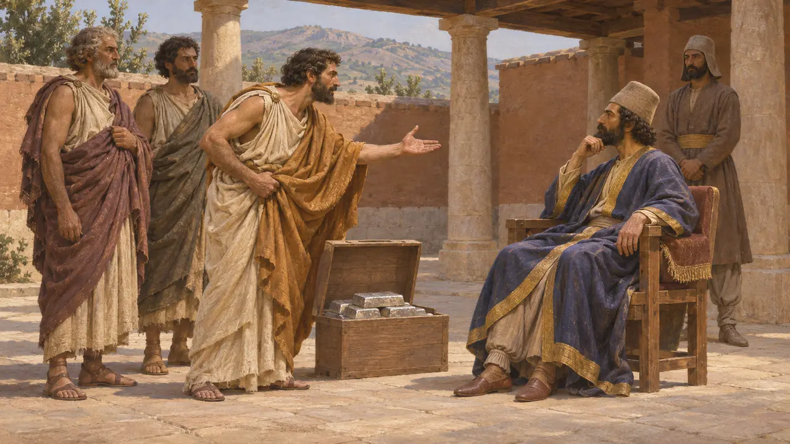
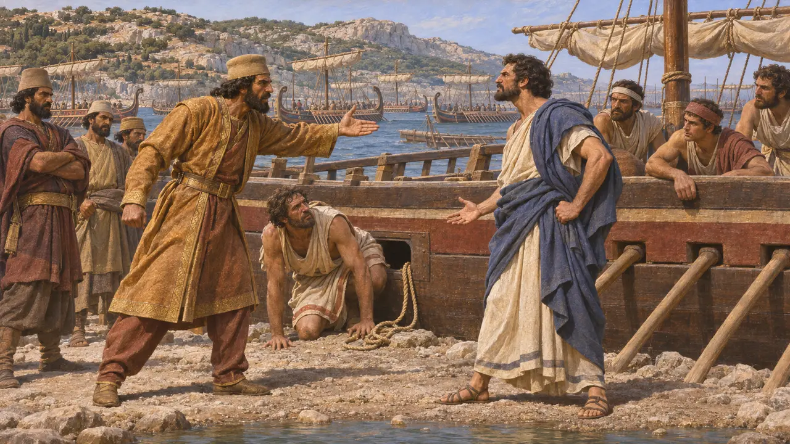
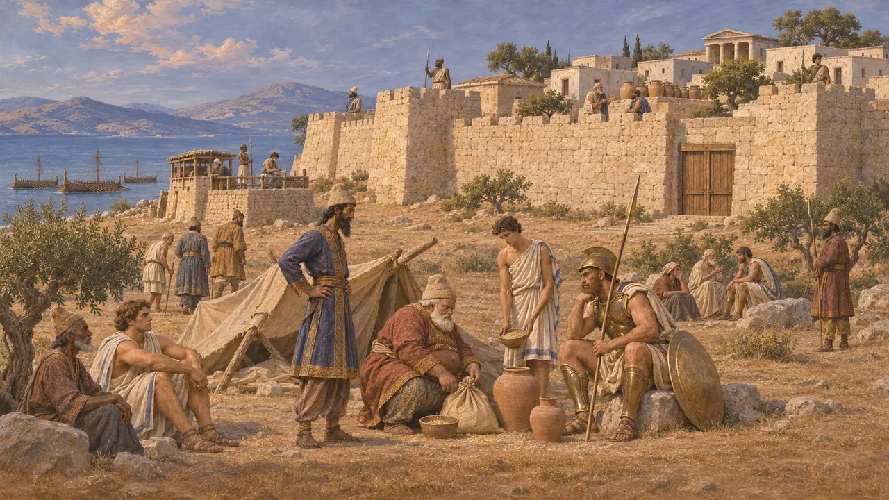
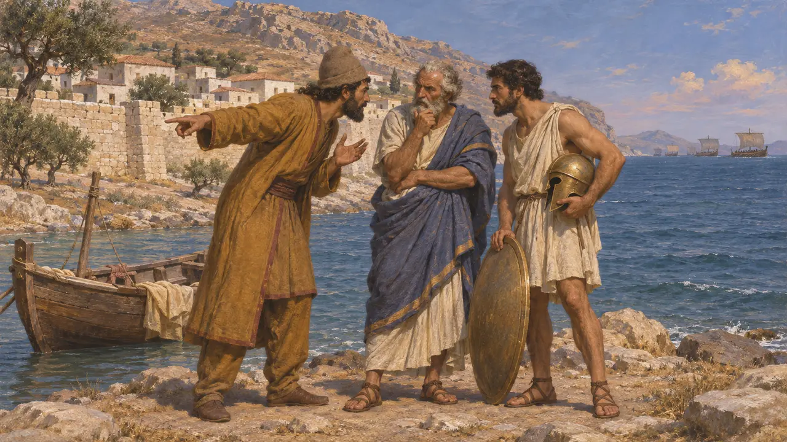

约公元前500年,米利都的代理统治者阿里斯塔哥拉斯说服总督阿尔塔弗涅斯派遣一支王家舰队,帮助被放逐的纳克索斯贵族复位。这场围攻通常被定在公元前499年,持续了四个月,以失败告终。希罗多德把它视为爱奥尼亚起义的直接起因:阿里斯塔哥拉斯无法兑现自己的许诺,便转而反对国王。
游戏中： 编年史依据希罗多德 5.30-35,记述了持续四个月的失败围攻,以及阿里斯塔哥拉斯的恐惧与债务。它把他个人的恐惧当作起义的原因,这是希罗多德的看法;史家还会权衡爱奥尼亚人更广泛的不满。

流亡者与提议
古代记述希罗多德说,被平民驱逐的纳克索斯富人来到米利都求援。阿里斯塔哥拉斯当时替被扣留在国王宫廷的希斯提埃伊奥斯治理这座城市,他从中看到了攫取权力的机会。他对萨第斯的阿尔塔弗涅斯说,纳克索斯十分富庶,拿下它,帕罗斯、安德罗斯、其余基克拉泽斯诸岛乃至优卑亚都将向国王敞开。他还提出由自己承担出兵的费用。
Herodotus 5.30-31

美伽巴铁斯统率的国王舰队
古代记述阿尔塔弗涅斯承诺,只要大流士批准,就提供200艘战船,并把指挥权交给美伽巴特斯,此人是两人的阿契美尼德族亲。舰队假称驶向赫勒斯滂,在希俄斯岛的卡乌卡萨等候北风。在那里,美伽巴特斯惩罚了明杜斯一艘战船的船长斯库拉克斯,把他从桨孔中捆绑出去。阿里斯塔哥拉斯将他释放,两位统帅就此公开争吵。
Herodotus 5.32-33

兵临城下4个月
古代记述纳克索斯人及时得到警告,把财物搬进城墙之内,并储备了粮食和水。希罗多德说,围攻者在城外坐等了4个月,直到钱用光,阿里斯塔哥拉斯也花费巨大。他们为流亡者在岛上修建了堡垒,然后一无所获地驶回亚洲。纳克索斯直到公元前490年才落入波斯人之手,当时达提斯焚毁了该城。
Herodotus 5.34; 6.96

背叛与叛乱的起因
争夺中希罗多德说,美伽巴铁斯出于对阿里斯塔哥拉斯的愤怒,亲自向纳克索斯人通风报信。一些历史学家对此表示怀疑,认为这是事后编出来为失败开脱的说法。关于这次远征,没有任何波斯方面的记录留存下来。希罗多德还把这场叛乱归因于阿里斯塔哥拉斯对自身地位的担忧;现代学者则补充了更广泛的原因,例如对波斯扶植的僭主的怨恨,以及王权统治给爱奥尼亚城邦带来的负担。
Herodotus 5.33-35; O. Murray, 'The Ionian Revolt', Cambridge Ancient History IV, 1988
奴隶头上的消息
后世传说希罗多德补充说,就在此时,一名奴隶从希斯提埃伊奥斯那里来到苏萨。希斯提埃伊奥斯剃光了他的头发,在头皮上刺下起事的命令,待头发长好后才把他派出。这个故事时机巧妙,又带着隐秘的讯息,读起来更像是后来在爱奥尼亚流传的传说,而不像是对这场叛乱如何开始的可靠记录。
Herodotus 5.35
来源
- Herodotus 5.28-38
- P. Briant, From Cyrus to Alexander, 2002
- O. Murray, 'The Ionian Revolt', Cambridge Ancient History IV, 1988
- P. B. Manville, 'Aristagoras and Histiaios: the leadership struggle in the Ionian revolt', Classical Quarterly 27, 1977
- P. Georges, 'Persian Ionia under Darius: the revolt reconsidered', Historia 49, 2000